GAMES101 — Modern Computer Graphics Note4: Ray Tracing and Materials
对应 Lecture 13–17。这是课程最难的一块：从"为什么要光线追踪"一直推到一个完整的 path tracer，再讲材质。
1. 为什么要 ray tracing
光栅化处理不好全局效果：软阴影、光线多次弹射的效果（glossy reflection、 indirect illumination、ambient occlusion……）。光栅化快但质量相对低；光线追踪准确但 非常慢：光栅化是实时的，光线追踪是离线的，电影里一帧要约 10K CPU core hours。
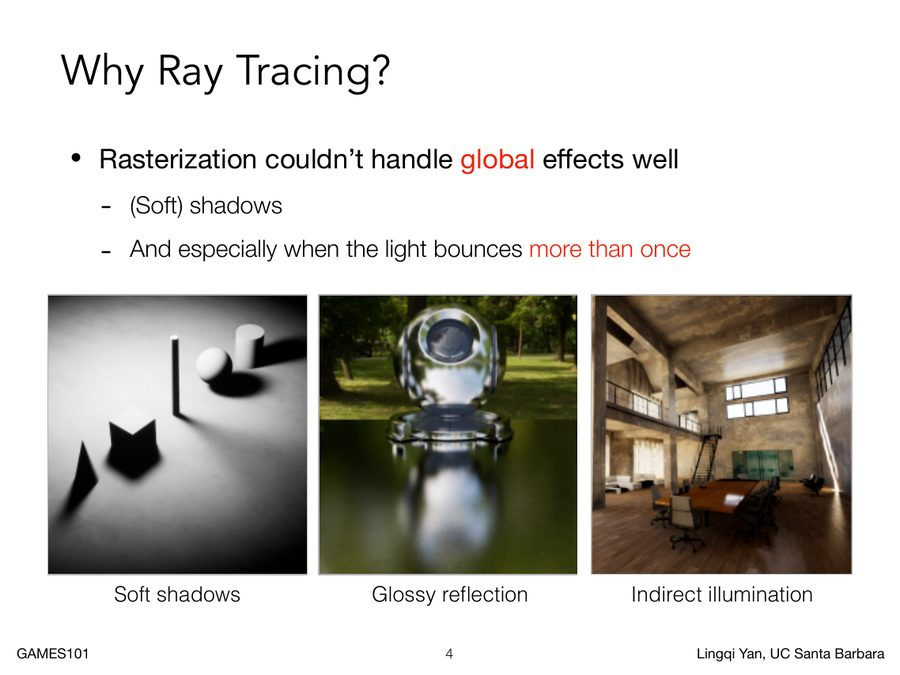
2. Whitted-style ray tracing
2.1 光线的三个假设
- 光沿直线传播（虽然是错的）
- 光线交叉时互不碰撞（还是错的）
- 光从光源出发到达眼睛，但物理在路径反转下不变（reciprocity），所以我们可以 反过来从眼睛出发追踪
2.2 Ray casting
Appel 1968：
- 从眼睛穿过每个像素发射一条光线（eye ray），找最近的交点
- 从交点向光源发射一条光线判断是否在阴影里（shadow ray）
- 在交点做 shading（比如 Blinn-Phong）
用的是 pinhole camera model，image plane 就是透视投影里的近平面。
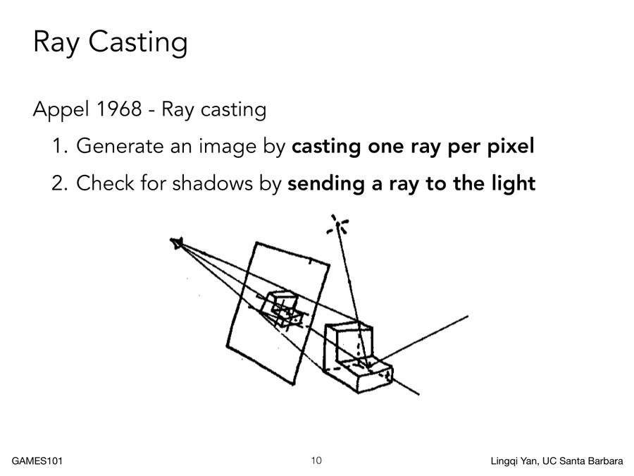
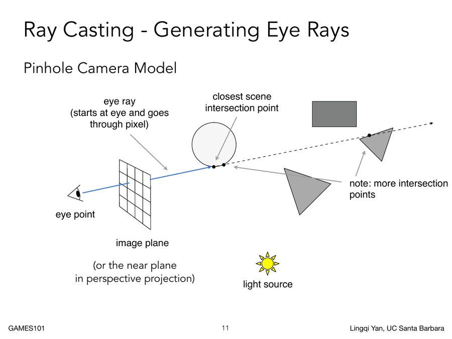
2.3 Recursive (Whitted-style) ray tracing
Whitted 1980（"An improved illumination model for shaded display"）：光线打到表面 后继续弹射。
- Reflected ray（specular reflection）
- Refracted ray（specular transmission）
- 每个交点都发 shadow ray 到光源，可见则计算 shading
从眼睛出发的叫 primary ray，弹射出的叫 secondary rays。每个交点的 shading 结果按一定权重累加回像素。渲染同一张图：1979 年 VAX 需要 74 分钟，2006 年 PC 需要 6 秒，2012 年 GPU 需要 1/30 秒。
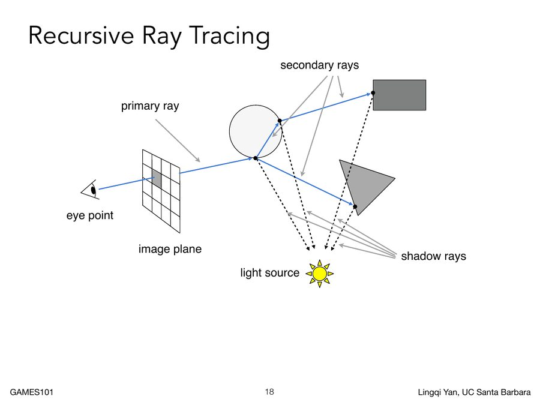
3. 光线与表面求交
3.1 光线方程
光线由起点和方向定义：
\(\mathbf{o}\) 是 origin，\(\mathbf{d}\) 是归一化的方向，\(t\) 是"时间"。
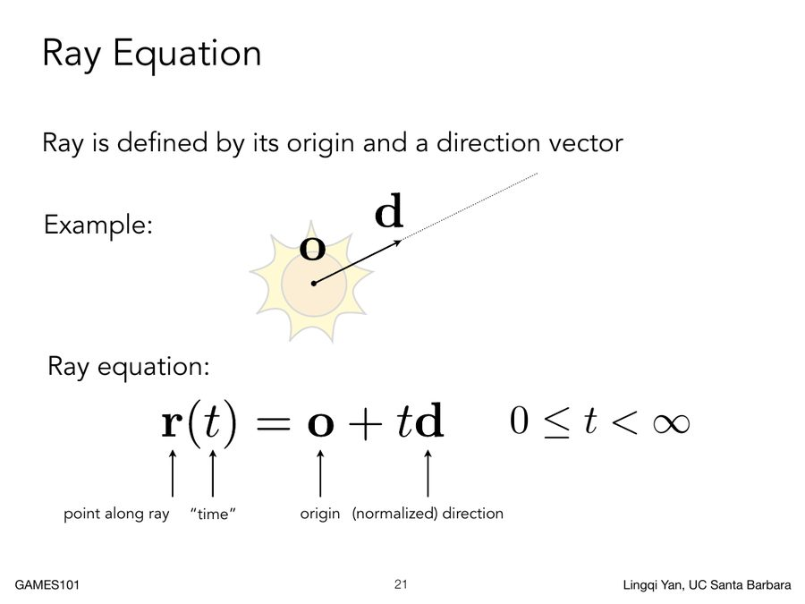
3.2 与球、隐式曲面求交
球面 \((\mathbf{p} - \mathbf{c})^2 - R^2 = 0\)。把 \(\mathbf{p} = \mathbf{r}(t)\) 代入：
取实的、正的、最小的根。一般的隐式曲面 \(f(\mathbf{p}) = 0\) 同理：解 \(f(\mathbf{o} + t\mathbf{d}) = 0\)。
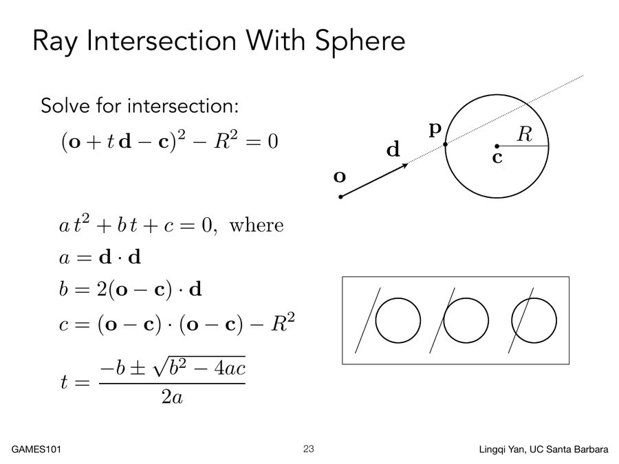
3.3 与三角形网格求交
为什么需要？渲染上是可见性、阴影、光照；几何上可以做内外判断（从点发一条光线， 与封闭物体的交点个数为奇数则在内部）。
最简单的想法：光线和每个三角形求交，简单但慢（后面讲加速）。一条光线和一个三角形 有 0 或 1 个交点。
三角形在一个平面上，所以分两步：先光线与平面求交，再判断交点是否在三角形内 （三个叉积）。平面由法线 \(\mathbf{N}\) 和平面上一点 \(\mathbf{p}'\) 定义： \((\mathbf{p} - \mathbf{p}') \cdot \mathbf{N} = 0\)。代入光线方程：
检查 \(0 \le t < \infty\)。
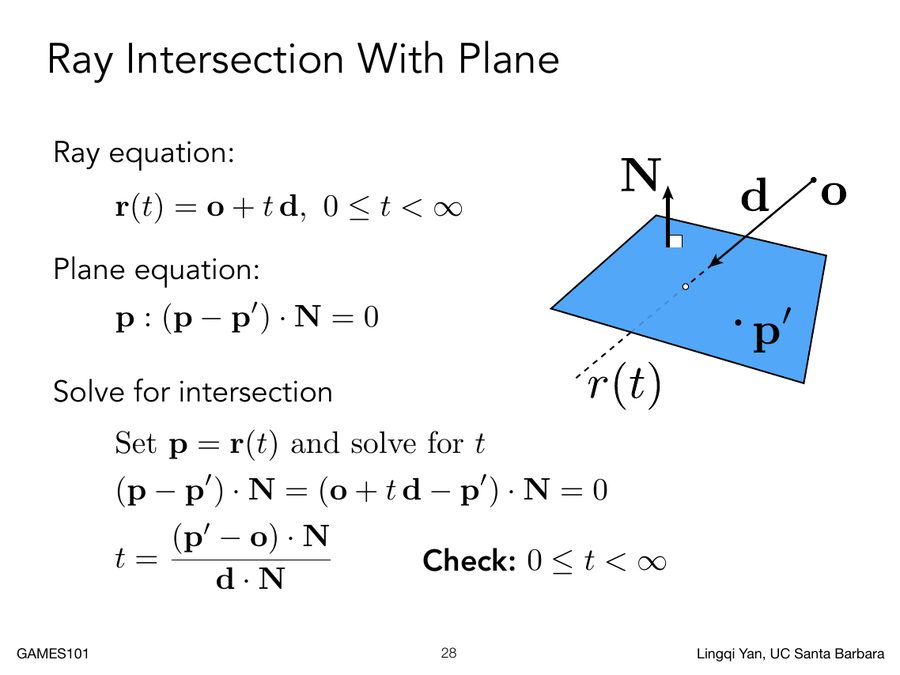
Möller-Trumbore 算法：更快，而且直接给出重心坐标。把交点同时写成光线上的点和 三角形内的点：
三个未知数 \(t, b_1, b_2\)，三个方程（xyz），用 Cramer 法则解：
\((1 - b_1 - b_2), b_1, b_2\) 就是重心坐标，三者都非负且 \(t \ge 0\) 时交点有效。
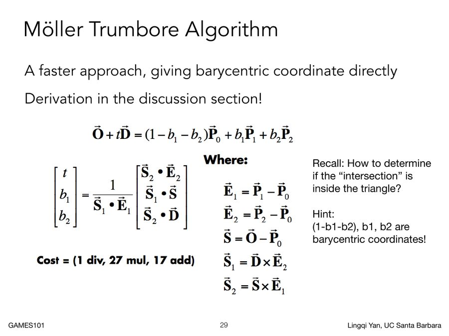
4. 加速求交
朴素算法的代价是 #pixels × #triangles（× #bounces），对千万级三角形的场景太慢。
4.1 Bounding volumes
用一个简单的体积包住复杂物体：物体完全在包围体内，光线不碰包围体就一定不碰物体。 所以先测包围体，碰到了再测物体。常用 Axis-Aligned Bounding Box（AABB）， 即每个面都与 x、y 或 z 轴对齐的盒子。
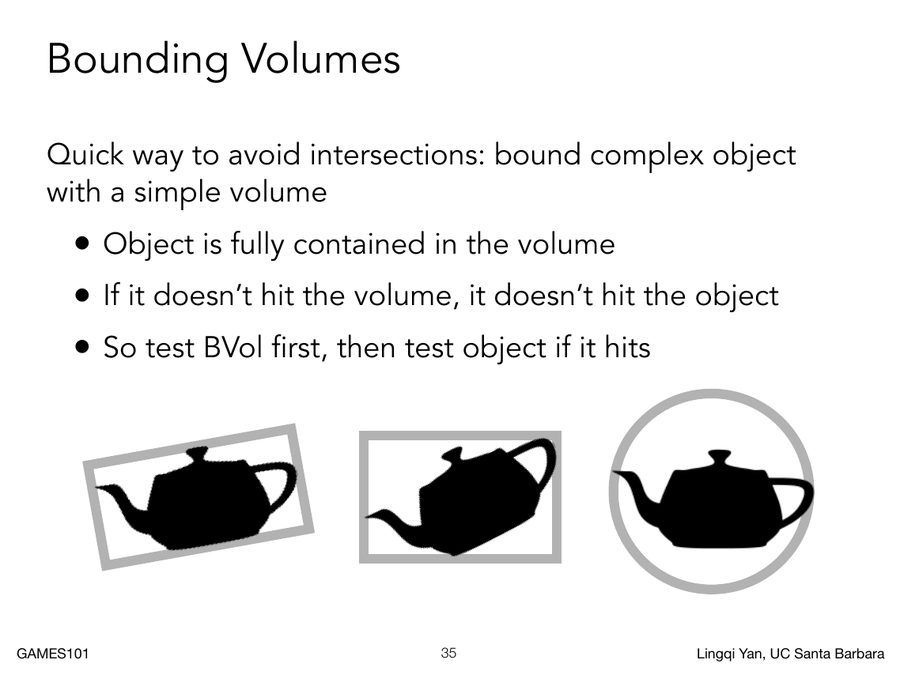
光线与 AABB 求交：把盒子理解为三对无限大平板（slabs）的交集。对每一对 平板算出光线进入和离开的 \(t_{min}, t_{max}\)（可以为负），然后
- 光线只有进入了所有三对平板才算进入盒子：\(t_{enter} = \max\{t_{min}\}\)
- 光线离开任何一对平板就离开了盒子：\(t_{exit} = \min\{t_{max}\}\)
- \(t_{enter} < t_{exit}\) 说明光线在盒子里待了一会儿，即相交
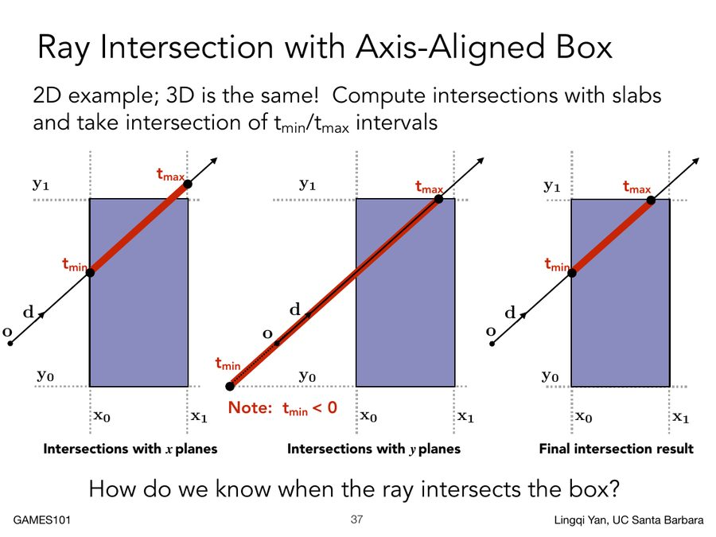
但光线不是直线，要考虑 \(t\) 的正负：\(t_{exit} < 0\) 说明盒子在光线背后，不相交； \(t_{exit} \ge 0\) 且 \(t_{enter} < 0\) 说明光线起点在盒子里，相交。总结：相交当且仅当 \(t_{enter} < t_{exit}\) 且 \(t_{exit} \ge 0\)。
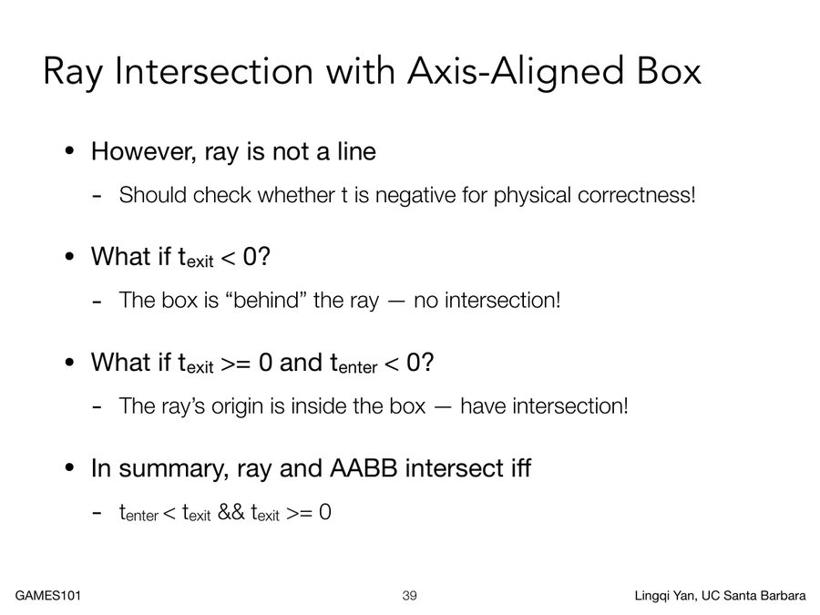
为什么要轴对齐？ 一般平面求交要 3 次减法、6 次乘法、1 次除法；与 x 轴垂直的平板 只需 \(t = (p'_x - o_x) / d_x\)，1 次减法 1 次除法。
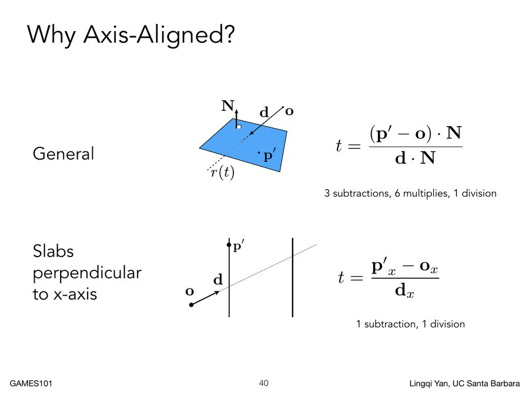
4.2 Uniform grids
预处理：
- 找场景的 bounding box
- 建立均匀网格
- 把每个物体存进它覆盖的所有格子
求交：沿光线穿过的顺序遍历格子（类似画线的光栅化），对每个格子测试它存的所有物体。
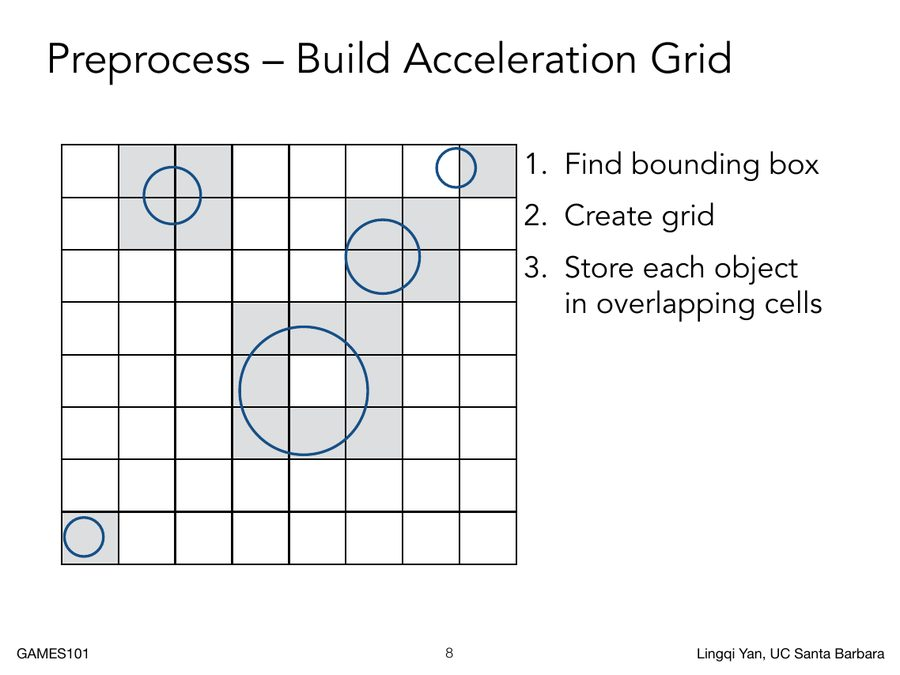
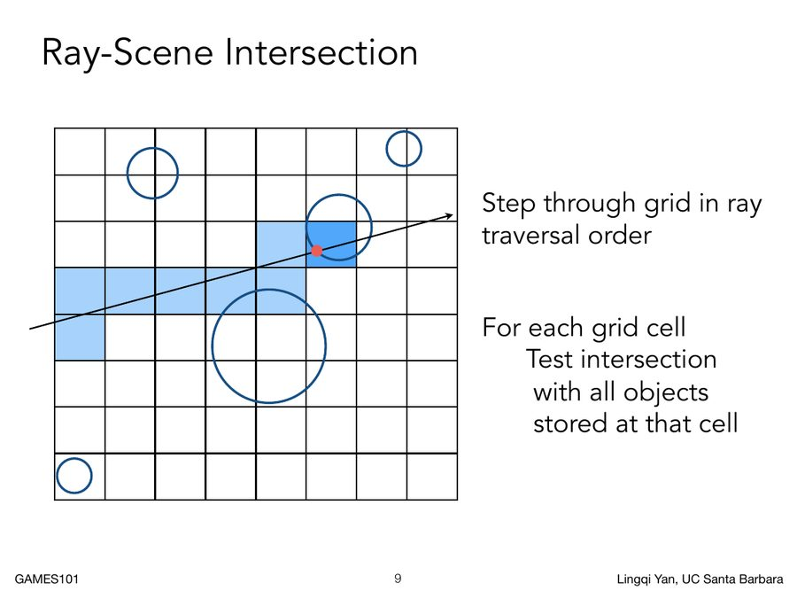
网格分辨率：一个格子等于没加速；格子太多则遍历空格子浪费时间。经验：
cells = C · #objs，3D 里 \(C \approx 27\)。
网格适合大量、大小和分布都均匀的物体（比如植被）。反例是 "teapot in a stadium"： 体育场里一个茶壶，绝大部分格子是空的，光线要穿过一堆空格子才到茶壶。
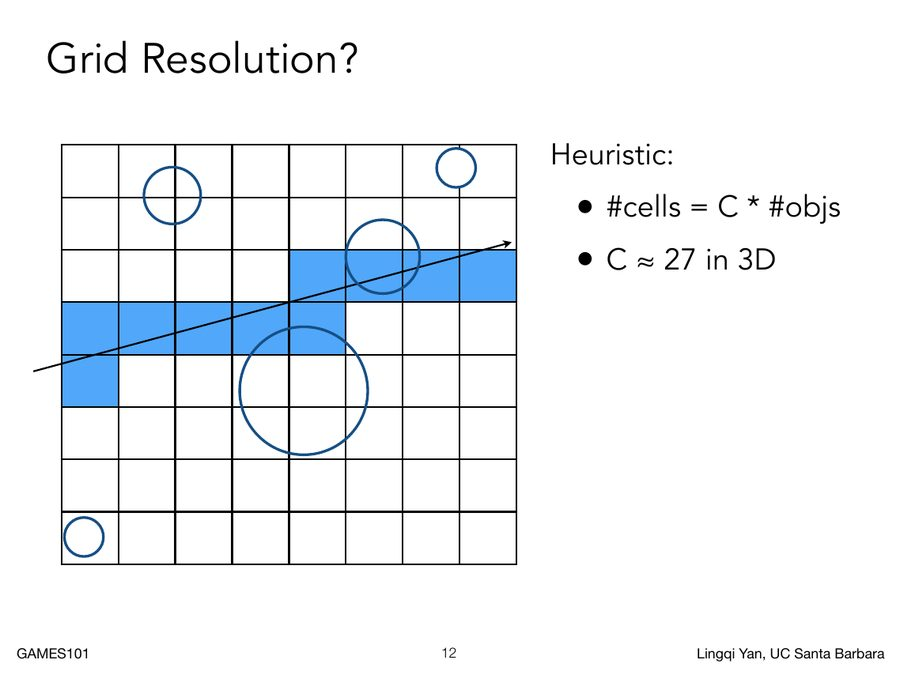
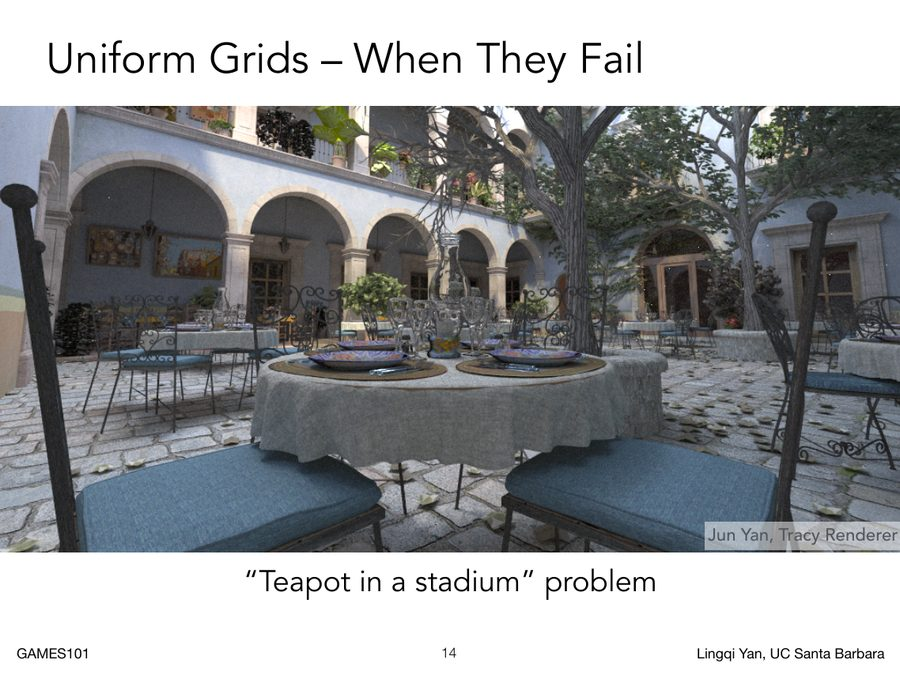
4.3 空间划分：KD-tree
Spatial partitions：Oct-tree（每次八等分，2D 是 quad-tree，对维度不友好）、 KD-tree（每次沿一个轴切一刀，轴轮流换）、BSP-tree（任意方向切，维度高时难算）。
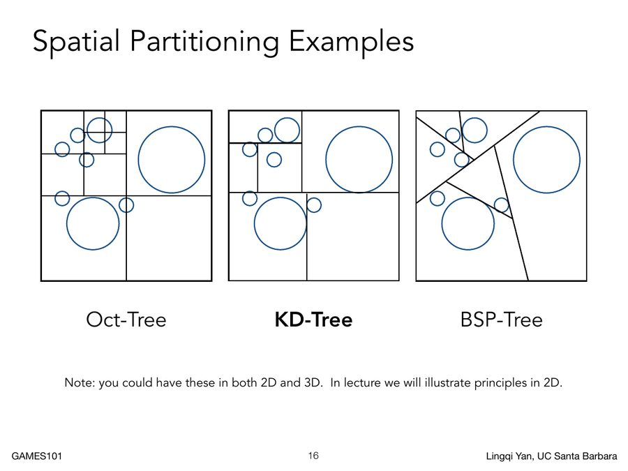
KD-tree 预处理：从整个 bounding box 开始，沿 x 切成两半，再各自沿 y 切…… 交替进行，直到叶节点里物体够少。数据结构：
- 内部节点存分割轴、分割位置、子节点指针，不存物体
- 叶节点存物体列表
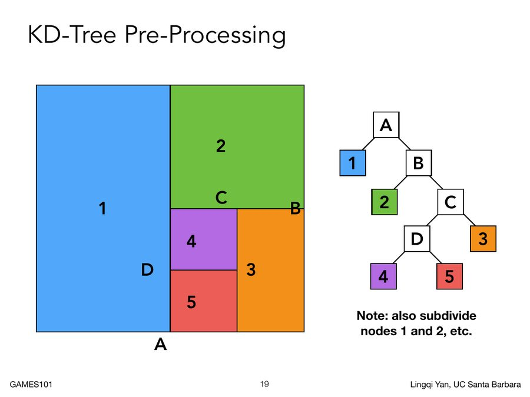
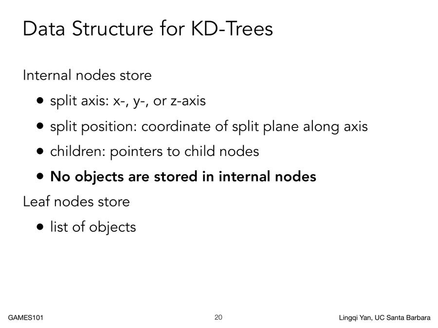
遍历：从根开始，光线和当前节点的 box 求交；内部节点就分别递归两个子节点， 叶节点就与其中所有物体求交。
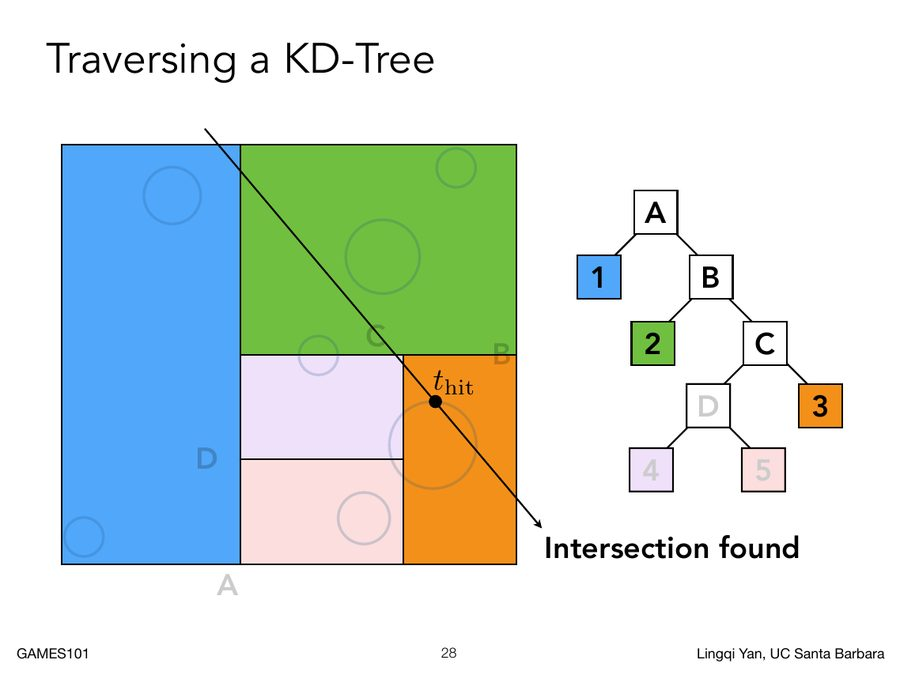
KD-tree 的问题：一个物体可能跨越多个区域，被存多次；而且判断三角形和 box 是否 相交本身不容易（三角形不一定有顶点在 box 内也可能穿过它）。
4.4 物体划分：BVH
Bounding Volume Hierarchy 换一种思路：划分的不是空间而是物体集合。
- 找 bounding box
- 递归地把物体集合分成两个子集
- 重新计算每个子集的 bounding box
- 必要时停止（比如节点内物体少于 5 个）
- 物体存在叶节点里
每个物体只在一个叶节点里，代价是两个子节点的 bounding box 可能在空间上重叠。
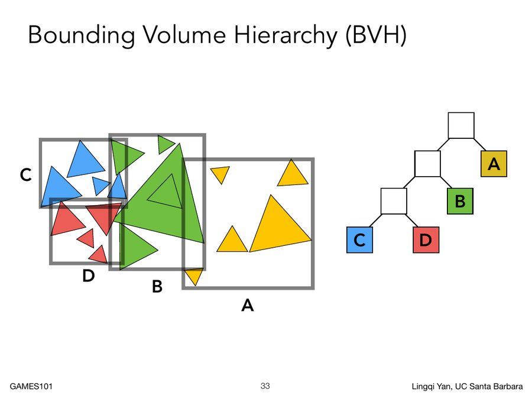
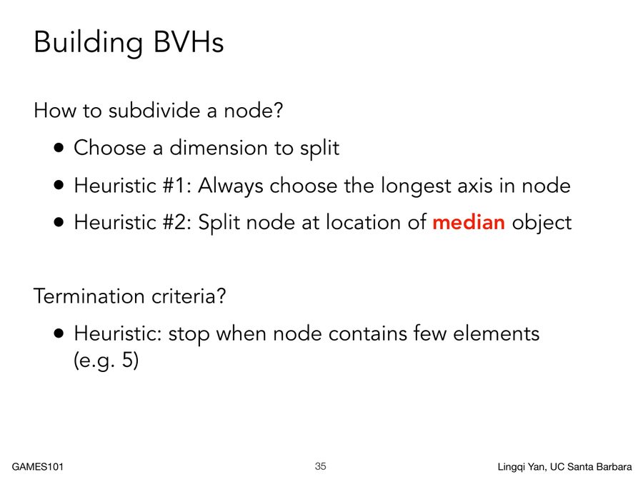
怎么划分节点？ 启发式：选最长的轴切；在中位数物体处切（用 quickselect 能 \(O(n)\) 找第 k 大），这样树是平衡的。
遍历：
Intersect(Ray ray, BVH node)
if (ray misses node.bbox) return;
if (node is a leaf node)
test intersection with all objs;
return closest intersection;
hit1 = Intersect(ray, node.child1);
hit2 = Intersect(ray, node.child2);
return the closer of hit1, hit2;
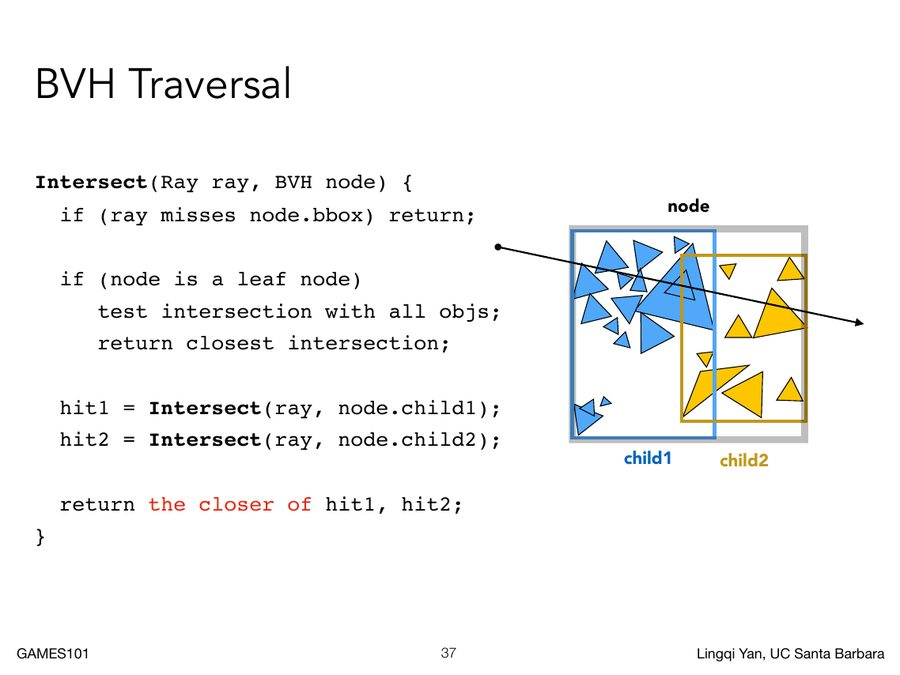
Spatial vs object partitions：空间划分把空间分成不重叠的区域，一个物体可能在 多个区域；物体划分把物体集合分成不相交的子集，各集合的 bounding box 可能重叠。 物体移动时 BVH 需要重建。
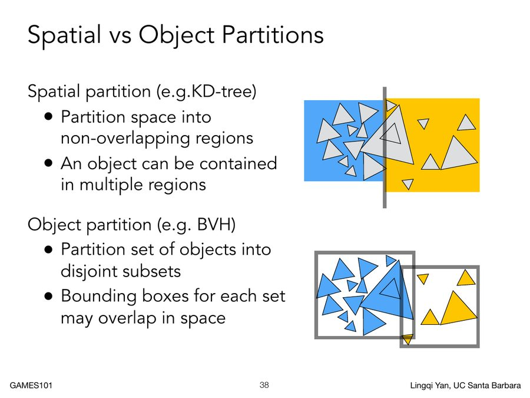
5. Radiometry（辐射度量学）
5.1 动机
Blinn-Phong 里光强 \(I = 10\)，10 什么？Whitted-style 给出的结果正确吗？答案都在 radiometry 里，它也是 path tracing 的基础。Radiometry 是光照的测量系统和单位， 能准确测量光的空间性质，让光照计算物理上正确。新概念：radiant flux、intensity、 irradiance、radiance。学习方法：WHY、WHAT、然后 HOW。
5.2 Radiant energy 与 flux
- Radiant energy：电磁辐射的能量，\(Q\) [J]（图形学里几乎不用）
- Radiant flux（power）：单位时间发射、反射、透射或接收的能量， \(\Phi \equiv \frac{dQ}{dt}\) [W] 或 [lm，流明]。可以理解为单位时间穿过传感器的光子数
三个重要的量：光源发出的（radiant intensity）、落在表面上的（irradiance）、 沿光线传播的（radiance）。
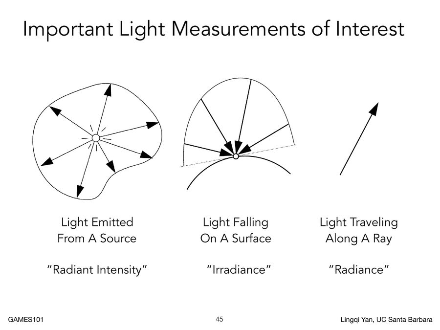
5.3 Radiant intensity
点光源单位立体角发出的功率：
candela 是 SI 七个基本单位之一。
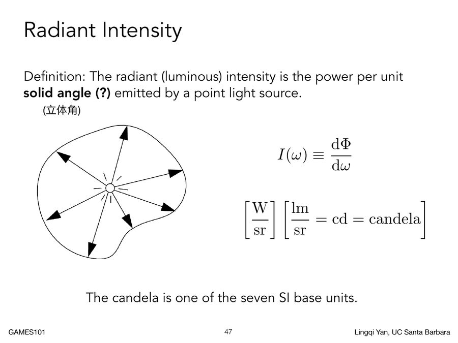
立体角：平面角是弧长与半径之比 \(\theta = l / r\)，圆有 \(2\pi\) 弧度；立体角是球面 上的面积与半径平方之比 \(\Omega = A / r^2\)，球有 \(4\pi\) 球面度（steradian）。
微分立体角：用 \(\theta\)（与 z 轴夹角）和 \(\phi\)（方位角）参数化方向， \(dA = (r\, d\theta)(r \sin\theta \, d\phi) = r^2 \sin\theta \, d\theta \, d\phi\)，
以后用 \(\omega\) 表示一个单位长度的方向向量。
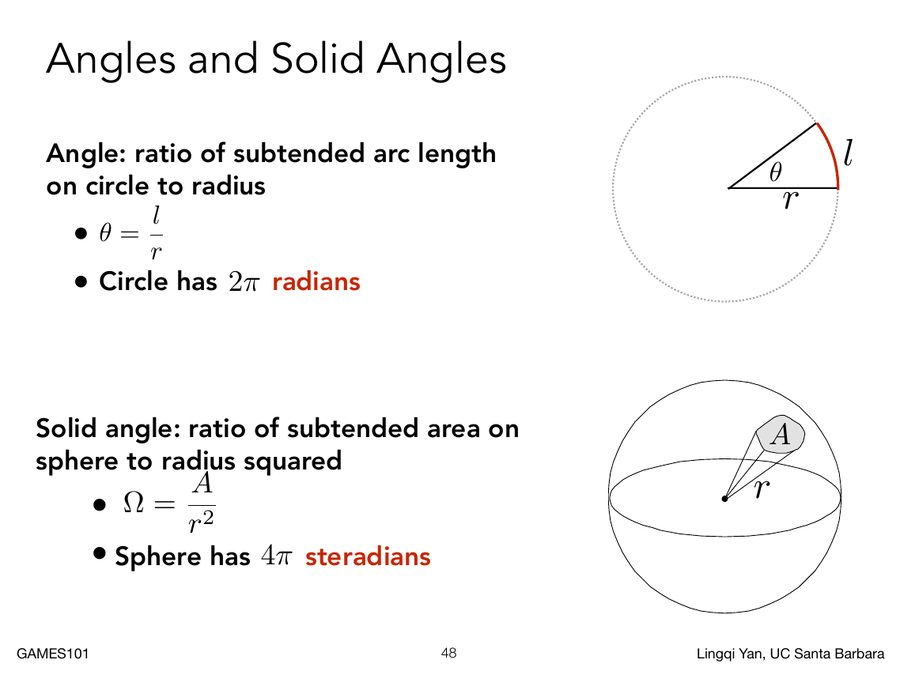
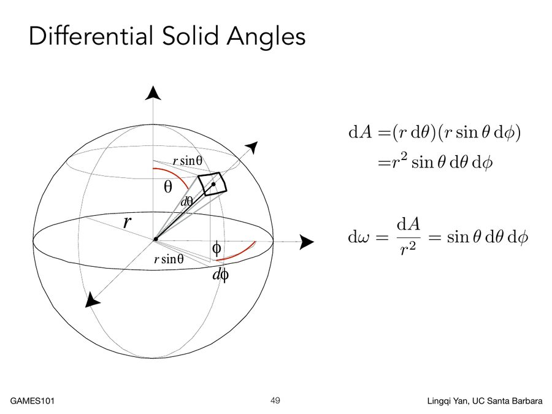
各向同性点光源：\(\Phi = \int_{S^2} I \, d\omega = 4\pi I\)，所以 \(I = \Phi / 4\pi\)。 例子：815 流明的 LED 灯泡，intensity = 815 / 4π ≈ 65 cd。
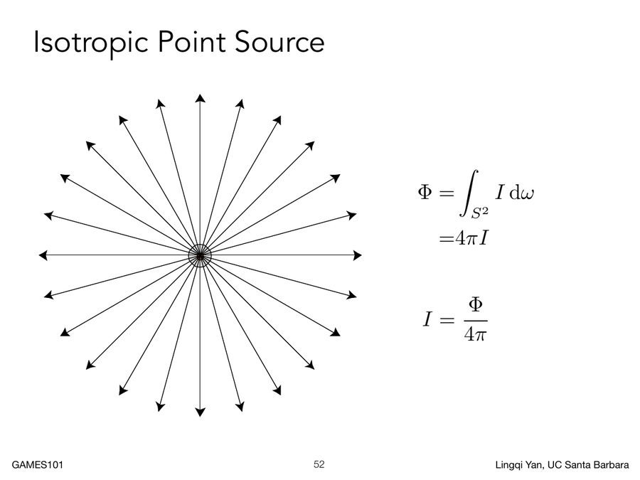
5.4 Irradiance
表面上一点单位面积接收的功率：
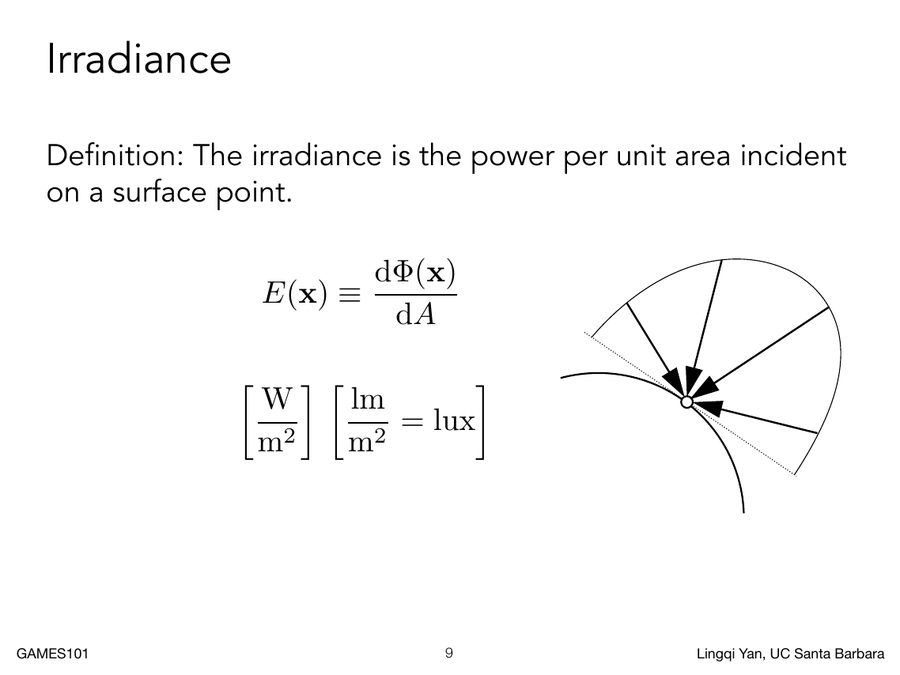
Lambert's cosine law 的正确解释：irradiance 正比于光线方向与法线夹角的余弦， 因为倾斜的表面上单位面积接收的功率变少了（注意面积始终按单位面积算，余弦作用在 \(\Phi\) 上）。这也是四季的成因：地轴倾斜 23.5°，夏天太阳光更垂直。
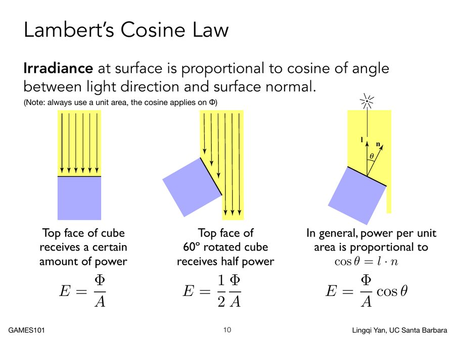
光的衰减的正确解释：点光源发出的功率均匀分布在球面上，半径 \(r\) 处的 irradiance 是 \(E = \Phi / (4\pi r^2)\)，所以 \(E = E_0 / r^2\)。衰减的是 irradiance， intensity 不衰减。
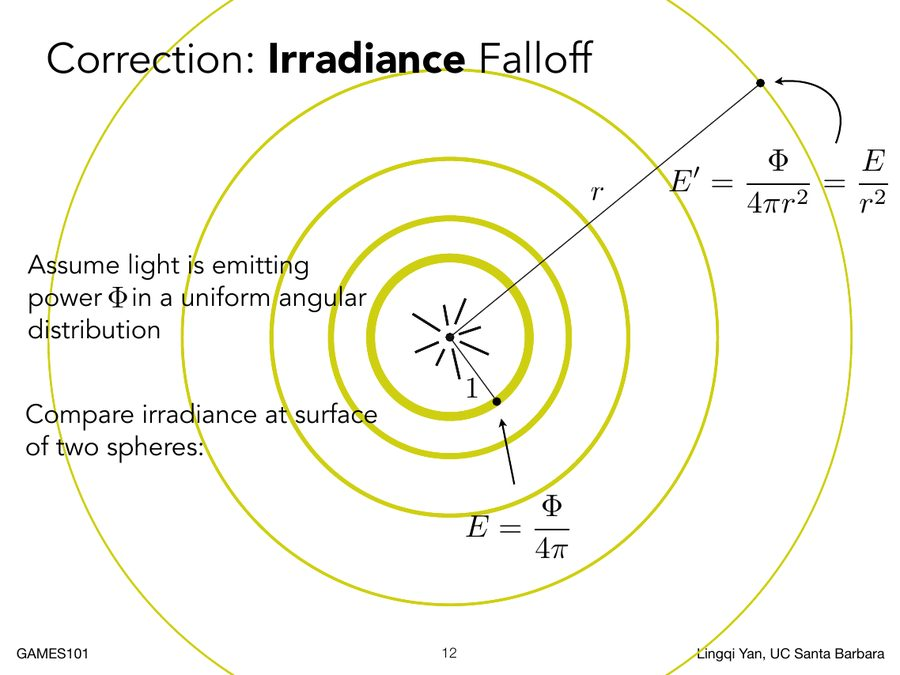
5.5 Radiance
Radiance 是描述环境中光分布的基本场量，是与一条光线关联的量， 渲染就是在算 radiance。
定义：表面单位立体角、单位投影面积发射、反射、透射或接收的功率
\(\cos\theta\) 把面积投影到与光线垂直的方向。
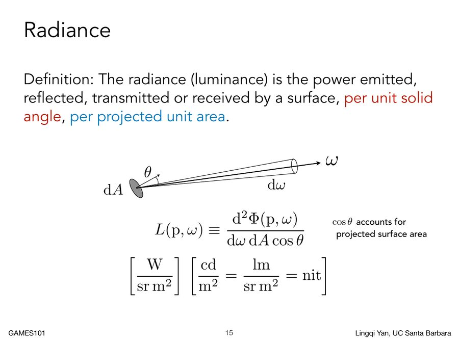
两种理解（irradiance 是单位投影面积的功率，intensity 是单位立体角的功率）：
- Radiance = irradiance per solid angle：入射 radiance 是单位立体角到达表面的 irradiance，\(L(\mathbf{p}, \omega) = \frac{dE(\mathbf{p})}{d\omega \cos\theta}\)， 即沿给定光线（表面点 + 入射方向）到达表面的光
- Radiance = intensity per projected area：出射 radiance 是单位投影面积离开 表面的 intensity，\(L(\mathbf{p}, \omega) = \frac{dI(\mathbf{p}, \omega)}{dA \cos\theta}\)， 比如面光源沿给定光线发出的光
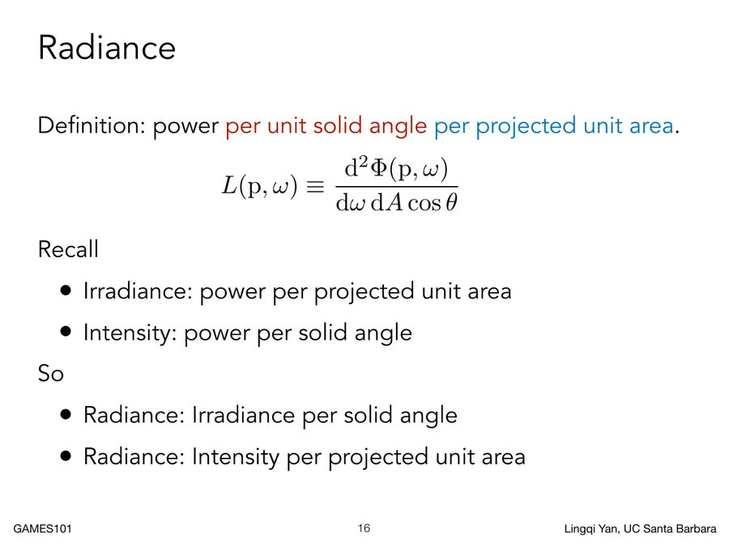
Irradiance vs radiance：irradiance 是面积 \(dA\) 接收的总功率，radiance 是 \(dA\) 从方向 \(d\omega\) 接收的功率。把所有方向的入射 radiance 加起来就是 irradiance：
\(H^2\) 是单位半球。
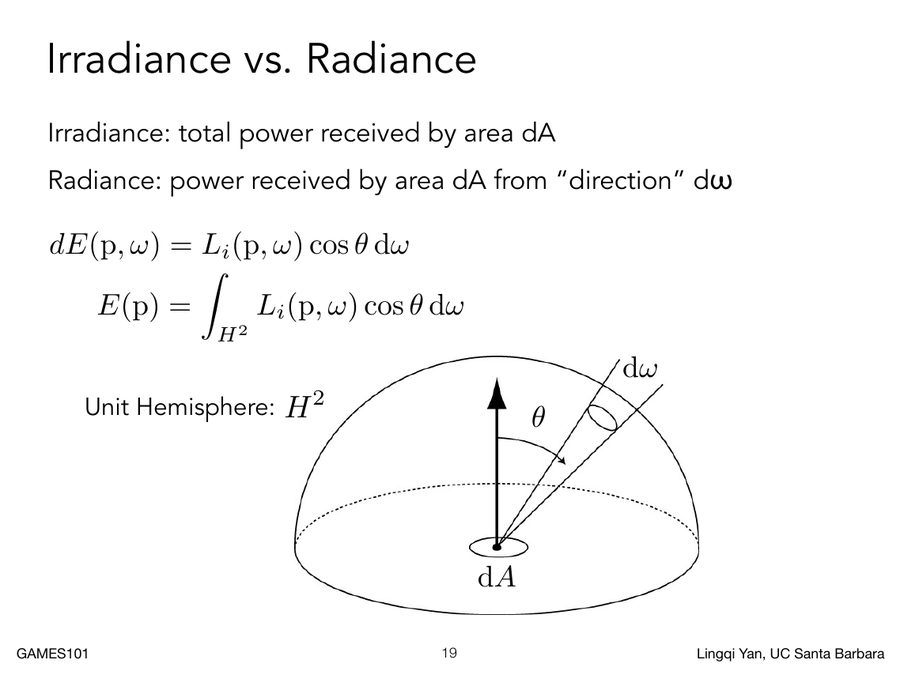
6. BRDF 与渲染方程
6.1 BRDF
一点上的反射：从方向 \(\omega_i\) 来的 radiance 变成 \(dA\) 接收的功率 \(E\)，这些功率 再变成射向其他方向 \(\omega_o\) 的 radiance。
Bidirectional Reflectance Distribution Function（BRDF）表示从每个入射方向来的光 有多少被反射到每个出射方向：
BRDF 定义了材质：它决定光怎么被反射，即怎么把能量分配到各个方向。
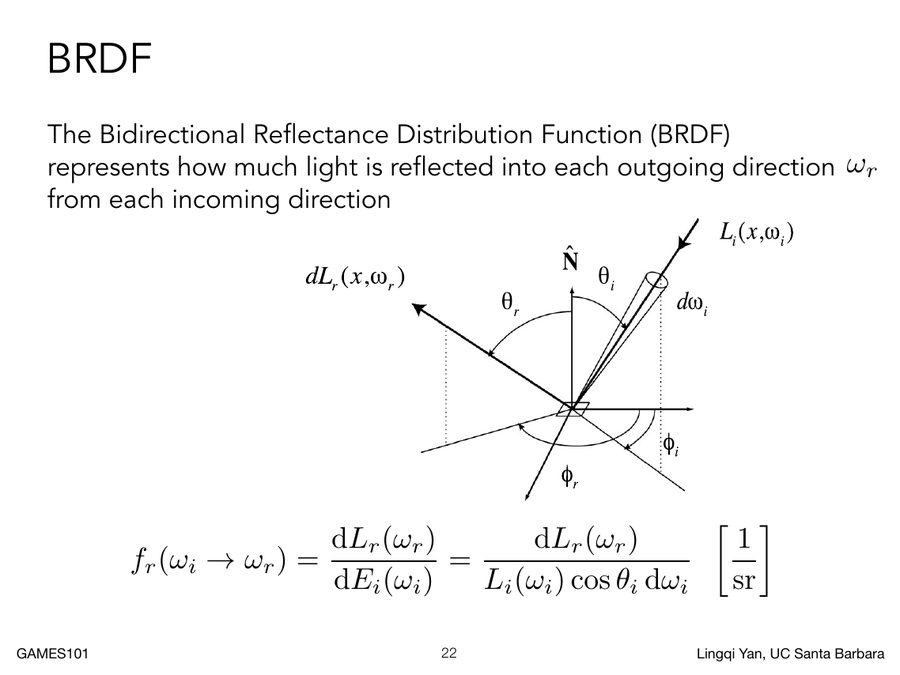
6.2 反射方程
把所有入射方向的贡献积分起来：
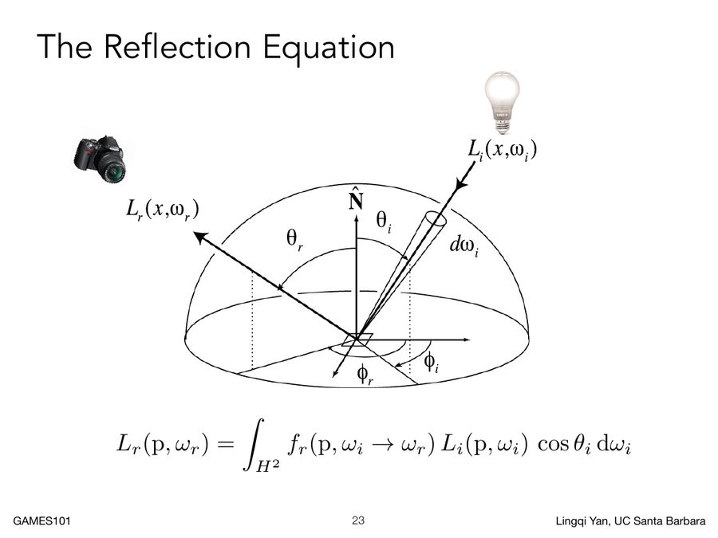
挑战：这是递归的。 反射的 radiance 依赖入射的 radiance，而入射的 radiance 又是 场景里另一点反射出来的 radiance。
6.3 渲染方程
加上自发光项 \(L_e\) 使其一般化，就是 the rendering equation（Kajiya 1986）：
约定所有方向都指向外。\(\Omega^+\) 是上半球。
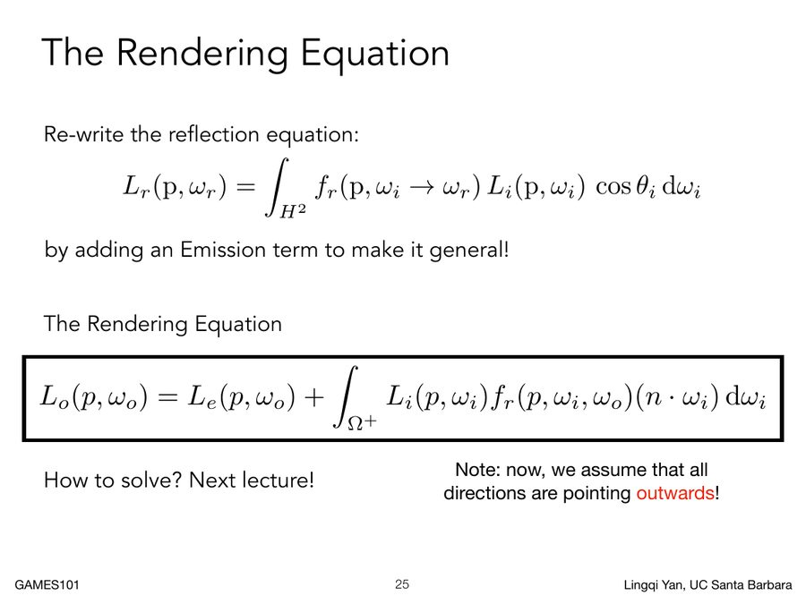
理解它：对点光源是对所有光源求和；对面光源把求和换成积分；再考虑其他表面的 互反射，入射 radiance \(L_i(\mathbf{x}, \omega_i)\) 就是另一点 \(\mathbf{x}'\) 的出射 radiance \(L_r(\mathbf{x}', -\omega_i)\)。式子里 \(L_e\)、\(f_r\)、\(\cos\) 已知，\(L_r\) 两边都出现，未知。
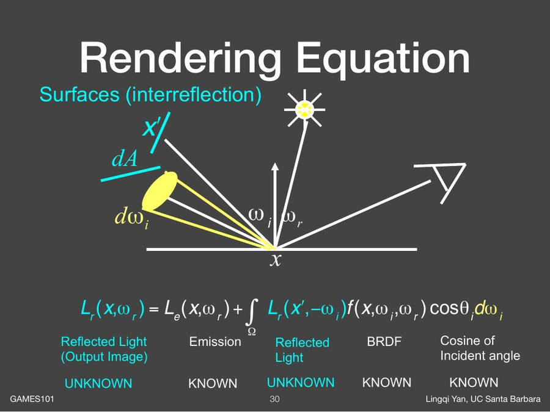
6.4 作为算子方程
渲染方程是第二类 Fredholm 积分方程，标准形式 \(l(u) = e(u) + \int l(v) K(u, v) \, dv\)， \(K\) 是核。写成线性算子：
用二项式定理展开：
- \(E\)：光源直接发出的光
- \(KE\)：直接光照（弹一次）
- \(K^2 E\)：一次间接光照（弹两次，包括镜面反射和折射）
- \(K^3 E\)：两次间接光照……
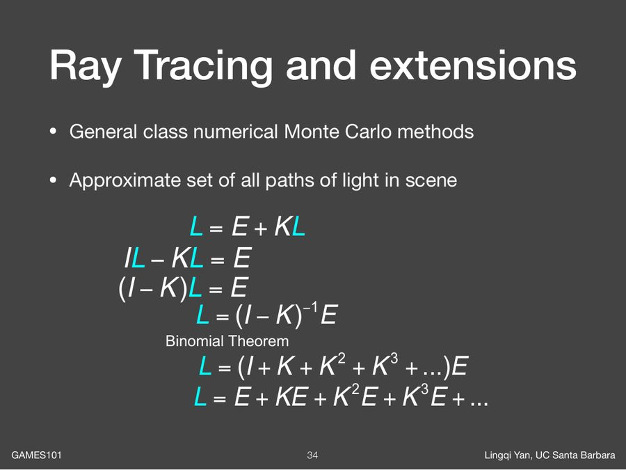
光栅化的 shading 只算 \(E + KE\)（直接光照），ray tracing 算的是全部。弹射次数 从 0、1、2、4、8 到 16，画面越来越亮，然后收敛；玻璃杯要弹两次以上才会亮。
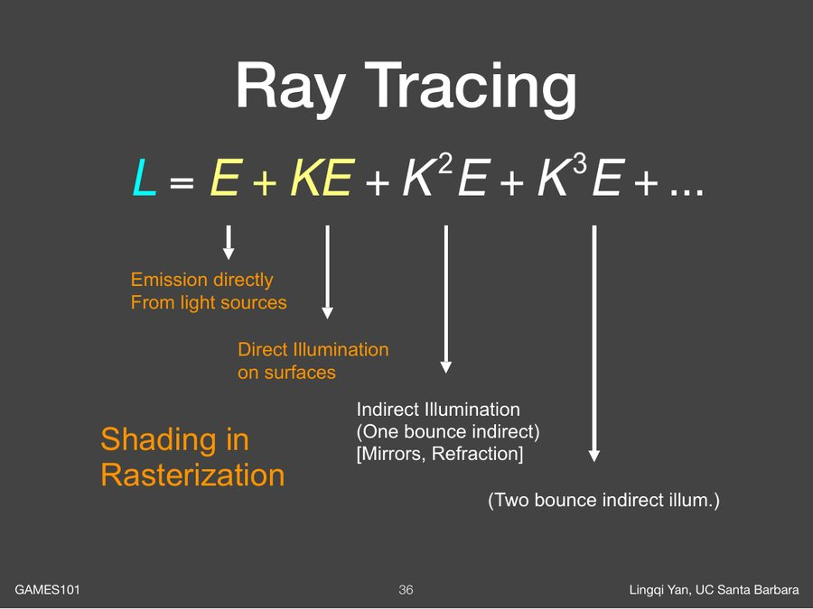
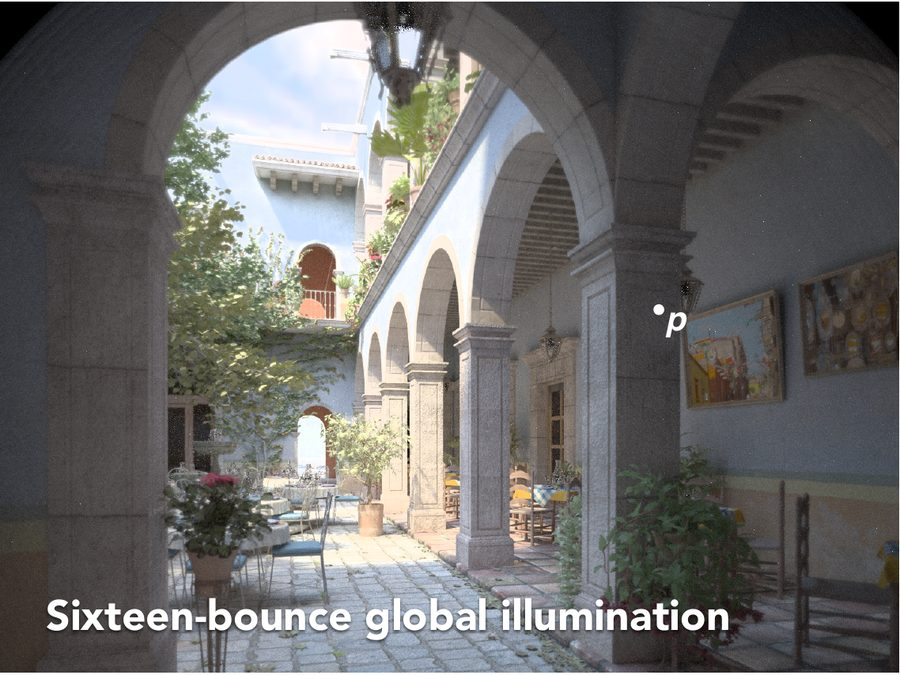
6.5 概率复习
- 随机变量 \(X \sim p(x)\)，\(p\) 是 PDF。离散情况 \(p_i \ge 0\)，\(\sum p_i = 1\)； 连续情况 \(p(x) \ge 0\)，\(\int p(x) \, dx = 1\)
- 期望 \(E[X] = \sum x_i p_i\) 或 \(\int x \, p(x) \, dx\)。骰子的期望是 3.5
- 随机变量的函数也是随机变量：\(Y = f(X)\)，\(E[Y] = E[f(X)] = \int f(x) p(x) \, dx\)
7. Monte Carlo path tracing
7.1 Monte Carlo integration
Why：要算一个积分，但解析解太难。What & how：用函数值的随机采样的平均来估计 积分。对 \(\int_a^b f(x) \, dx\)，取随机变量 \(X_i \sim p(x)\)，
均匀采样时 \(p(x) = 1 / (b - a)\)，估计量是 \(\frac{b - a}{N} \sum f(X_i)\)。两点注意： 样本越多方差越小；在 x 上采样就在 x 上积分。
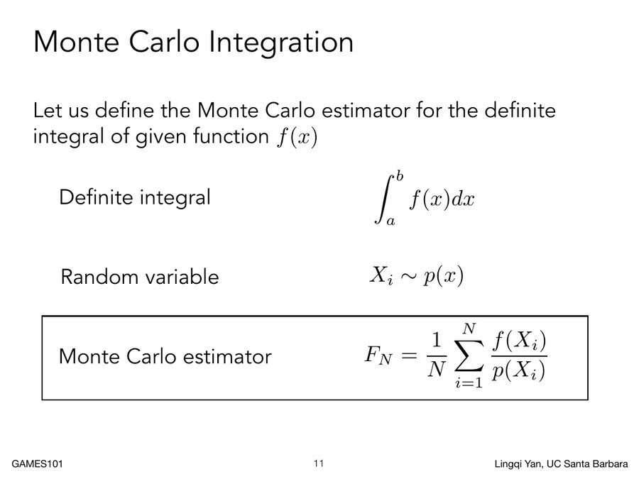
7.2 Whitted-style 哪里错了
Whitted-style 总是做镜面反射/折射，遇到漫反射就停。这合理吗？
- 问题 1：glossy 材质该往哪反射？镜面反射是错的
- 问题 2：漫反射表面之间没有反射？Cornell box 里红墙会把红色映到旁边的盒子上， 天花板也应被照亮，只算直接光照全是黑的
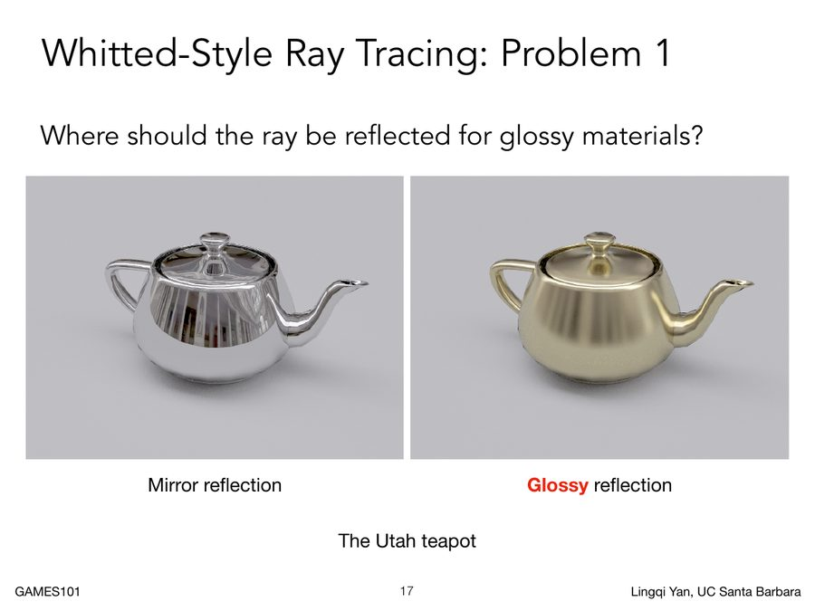
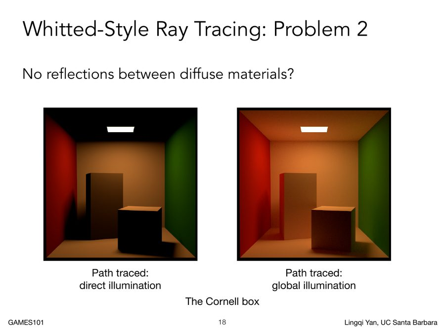
Whitted-style 是错的，但渲染方程是对的。它涉及半球上的积分和递归。积分怎么数值 求解？Monte Carlo。
7.3 直接光照的 Monte Carlo 解
先只算直接光照（面光源）。反射方程本质上只是一个对方向的积分：
"f(x)" 就是被积函数，pdf 取均匀采样半球 \(p(\omega_i) = 1 / 2\pi\)：
shade(p, wo)
Randomly choose N directions wi ~ pdf
Lo = 0.0
For each wi
Trace a ray r(p, wi)
If ray r hit the light
Lo += (1 / N) * L_i * f_r * cosine / pdf(wi)
Return Lo
这已经是一个正确的直接光照 shading 算法。
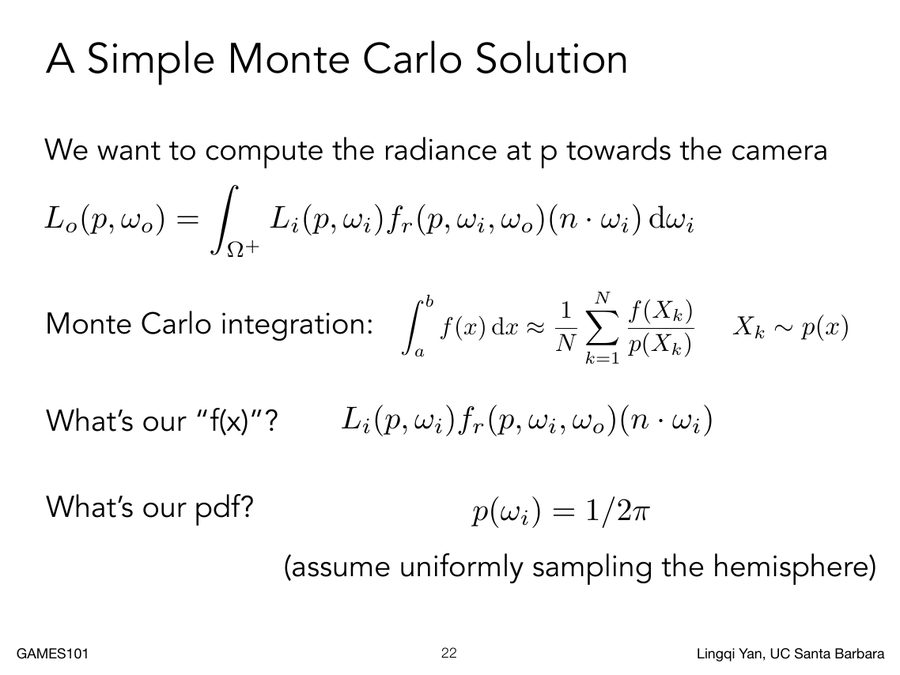
7.4 引入全局光照
再进一步：光线打到物体 Q 怎么办？Q 也会向 P 反射光，多少？就是 Q 的直接光照 （递归）。
Else If ray r hit an object at q
Lo += (1 / N) * shade(q, -wi) * f_r * cosine / pdf(wi)
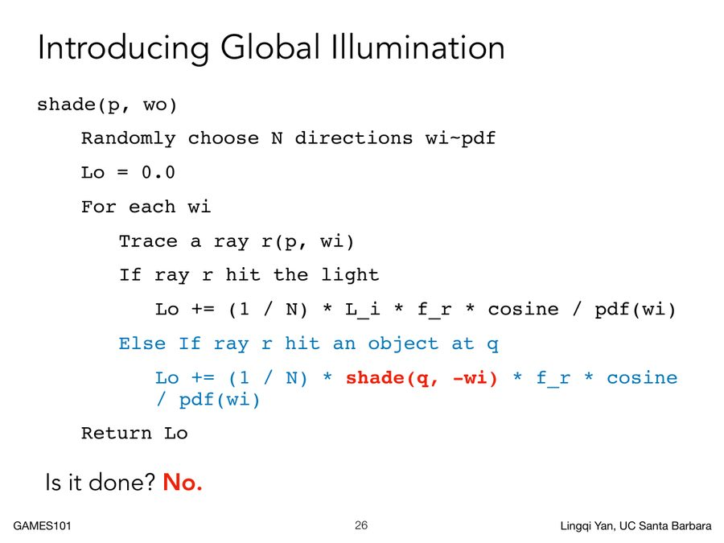
问题 1：光线数量爆炸。 每次弹射 N 条，#rays = N^{#bounces}。当且仅当 N = 1 才不会爆炸。所以从现在起每个 shading point 只追踪一条光线：
shade(p, wo)
Randomly choose ONE direction wi ~ pdf(w)
Trace a ray r(p, wi)
If ray r hit the light
Return L_i * f_r * cosine / pdf(wi)
Else If ray r hit an object at q
Return shade(q, -wi) * f_r * cosine / pdf(wi)
这就是 path tracing（N ≠ 1 时叫 distributed ray tracing）。一条光线会很噪， 没关系，每个像素多追踪几条路径然后平均：
ray_generation(camPos, pixel)
Uniformly choose N sample positions within the pixel
pixel_radiance = 0.0
For each sample in the pixel
Shoot a ray r(camPos, cam_to_sample)
If ray r hit the scene at p
pixel_radiance += 1 / N * shade(p, sample_to_cam)
Return pixel_radiance
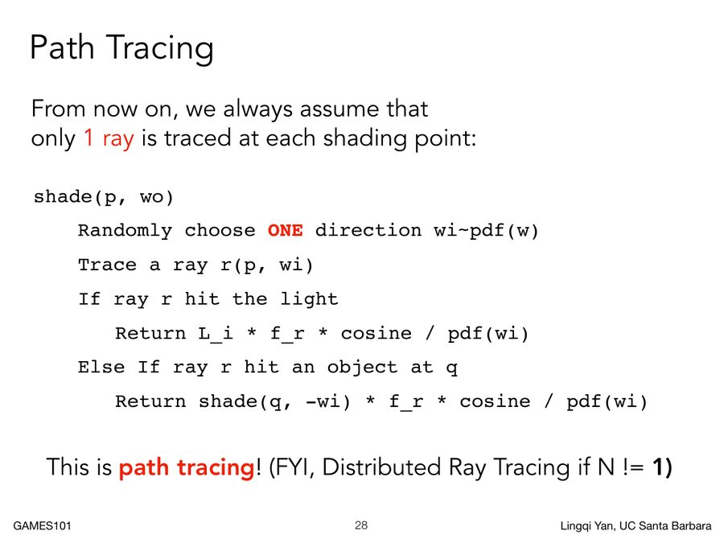
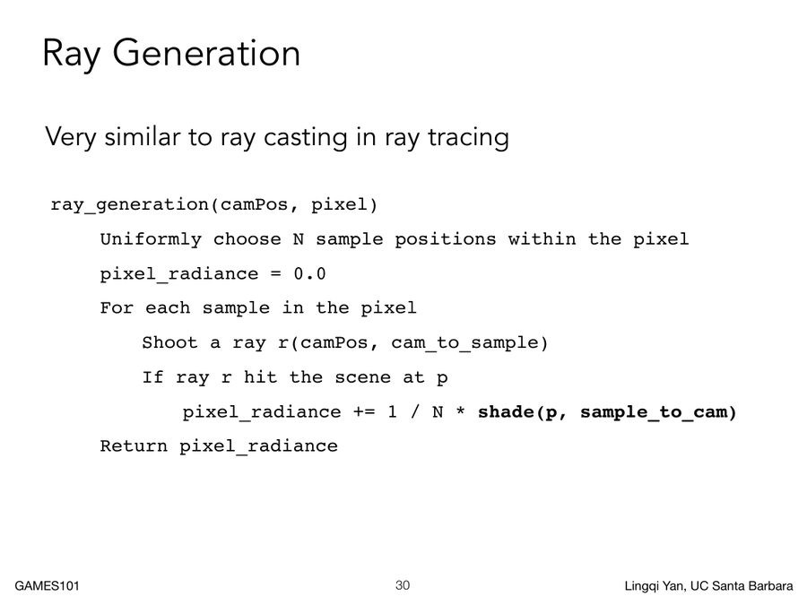
7.5 Russian Roulette
问题 2：递归永远不停。 两难：光确实不会停止弹射，截断弹射次数就是截断能量 （3 次弹射比 17 次暗）。
Russian Roulette（RR）：设一个概率 \(P\)（\(0 < P < 1\)）。以概率 \(P\) 发射光线并 返回 \(L_o / P\)；以概率 \(1 - P\) 不发射，返回 0。期望不变：
shade(p, wo)
Manually specify a probability P_RR
Randomly select ksi in a uniform dist. in [0, 1]
If (ksi > P_RR) return 0.0;
Randomly choose ONE direction wi ~ pdf(w)
Trace a ray r(p, wi)
If ray r hit the light
Return L_i * f_r * cosine / pdf(wi) / P_RR
Else If ray r hit an object at q
Return shade(q, -wi) * f_r * cosine / pdf(wi) / P_RR
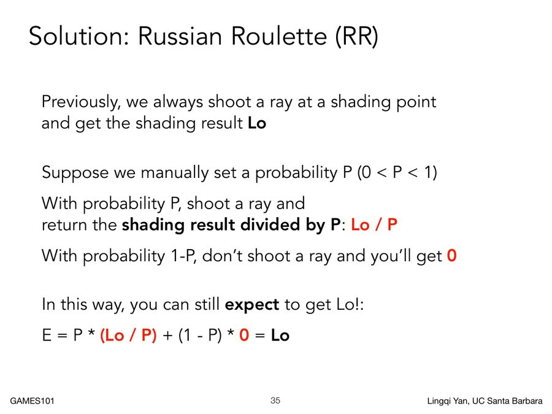
到此已经是正确的 path tracing，但效率不高：SPP（samples per pixel）低时很噪。
7.6 对光源采样
低效的原因：均匀采样半球时，光源很小的话每 5 条、500 条甚至 50000 条光线才有一条 打到光源，大量光线浪费了。
Monte Carlo 允许任意采样方法，所以可以直接在光源上采样，一条都不浪费。 在光源上均匀采样，pdf = 1/A。但渲染方程是对立体角积分的，而"在 x 上采样就要在 x 上积分"，所以要把方程改写成对光源面积 \(dA\) 的积分。需要 \(d\omega\) 和 \(dA\) 的关系， 回忆立体角的定义（单位球上的投影面积）：
\(\theta'\) 是光源法线与连线的夹角（注意不是 \(\theta\)）。
于是
现在是对光源的积分，"f(x)" 是里面的一切，pdf 是 1/A。
把 radiance 分成两部分：光源的贡献（直接，不需要 RR）和其他反射物的贡献 （间接，需要 RR）：
shade(p, wo)
# Contribution from the light source.
L_dir = 0.0
Uniformly sample the light at x' (pdf_light = 1 / A)
Shoot a ray from p to x'
If the ray is not blocked in the middle
L_dir = L_i * f_r * cos θ * cos θ' / |x' - p|^2 / pdf_light
# Contribution from other reflectors.
L_indir = 0.0
Test Russian Roulette with probability P_RR
Uniformly sample the hemisphere toward wi (pdf_hemi = 1 / 2pi)
Trace a ray r(p, wi)
If ray r hit a non-emitting object at q
L_indir = shade(q, -wi) * f_r * cos θ / pdf_hemi / P_RR
Return L_dir + L_indir
最后一件事：光源上的采样点可能被挡住，所以从 p 向 x' 发一条光线检查中间没有遮挡。 Path tracing 到此完成。
7.7 一些说明
- Path tracing 确实难：物理、概率、微积分、编程都要。它算"introductory"吗？不算， 但它是"modern"的
- Path tracing 正确吗？ 几乎 100% 正确，即 photo-realistic：Cornell box 的 渲染和照片几乎一样
- "Ray tracing" 的含义变了：以前指 Whitted-style；现在指光线传输的一般解法，包括 单向和双向 path tracing、photon mapping、Metropolis light transport、VCM/UPBP 等
- 没讲的内容：怎么均匀采样半球，以及一般地怎么按任意函数采样（sampling）； pdf 怎么选最好（importance sampling）；随机数重要吗，是的（low discrepancy sequences）；能不能同时采样半球和光源，能（multiple importance sampling）； 像素的 radiance 为什么是穿过它的所有路径 radiance 的平均（pixel reconstruction filter）；像素的 radiance 是像素的颜色吗，不是（gamma correction、curves、 color space）
8. 材质与外观
8.1 Material == BRDF
图形学里的材质就是 BRDF：它决定光怎么和表面作用。
Diffuse / Lambertian：光被均匀地反射到各个方向。假设入射光均匀且表面不吸收 （能量守恒，出射等于入射）：
所以 \(f_r = \rho / \pi\)，\(\rho\) 是 albedo（颜色，\([0, 1]\)）。
Glossy（铜、铝，像磨砂金属）；ideal reflective / refractive（玻璃、水， 既反射又折射，此时叫 BSDF，S 是 scattering，包含 reflection 和 transmission）。
8.2 完美镜面反射与折射
Perfect specular reflection：\(\theta_o = \theta_i\)，方位角 \(\phi_o = (\phi_i + \pi) \bmod 2\pi\)。 向量形式：
Specular refraction：光进入新介质时折射。Snell's law：
\(\eta\) 是折射率（IOR）：真空 1.0，空气 1.00029，水 1.333，玻璃 1.5 到 1.6，钻石 2.42 （折射率与波长有关，这些是平均值）。
推导出射角：
根号里小于 0 时没有折射，即全反射（total internal reflection）：光从光密介质进入 光疏介质（\(\eta_i / \eta_t > 1\)）且入射角足够大时无法射出。水下看天空只能看到一个 圆锥（Snell's window）。
8.3 Fresnel term
反射率依赖入射角（和偏振）：掠射角（grazing angle）时反射更强。看书页时低头几乎 垂直看不到反射，抬到接近平行时就像镜子。
- Dielectric（绝缘体，如 \(\eta = 1.5\) 的玻璃）：垂直入射时反射率很低（约 4%）， 接近 90° 时趋于 100%
- Conductor（导体、金属）：反射率一直很高
准确公式需要考虑偏振（s 和 p 分量取平均）。实用的是 Schlick's approximation：
8.4 Microfacet material
从太空看地球，地球是光滑的，海面上有太阳的高光。Microfacet theory： 粗糙表面在宏观上平而粗糙，在微观上凹凸不平但每个微表面是镜面。 每个 microfacet 有自己的法线。
Microfacet BRDF 的关键是微表面法线的分布：集中就是 glossy，分散就是 diffuse。 哪些微表面把 \(\omega_i\) 反射到 \(\omega_o\)？法线等于半程向量 \(\mathbf{h}\) 的那些。
- \(F\)：Fresnel term
- \(D\)：distribution of normals，法线朝向 \(\mathbf{h}\) 的微表面有多少
- \(G\)：shadowing-masking term，掠射角时微表面互相遮挡（光进不去或反不出来）， 修正这部分损失
Microfacet 模型非常强大，是 PBR 的基础。
8.5 各向同性与各向异性
关键是底层表面的方向性。Isotropic：微表面法线没有方向性，BRDF 与方位角差 无关，\(f_r(\theta_i, \phi_i; \theta_r, \phi_r) = f_r(\theta_i, \theta_r, \phi_r - \phi_i)\)。 Anisotropic：反射依赖方位角，来自表面有取向的微结构，比如拉丝金属（电梯 内壁）、平底锅的刷痕、尼龙、天鹅绒。
8.6 BRDF 的性质
- 非负性：\(f_r(\omega_i \to \omega_r) \ge 0\)
- 线性：反射方程对 BRDF 是线性的，所以可以把 BRDF 拆成几项分别算再相加
- 互易性（reciprocity）：\(f_r(\omega_r \to \omega_i) = f_r(\omega_i \to \omega_r)\)
- 能量守恒：\(\forall \omega_r,\ \int_{H^2} f_r(\omega_i \to \omega_r) \cos\theta_i \, d\omega_i \le 1\)
- 各向同性时结合互易性有 \(f_r(\theta_i, \theta_r, \phi_r - \phi_i) = f_r(\theta_i, \theta_r, |\phi_r - \phi_i|)\)
8.7 测量 BRDF
理论模型和实际测量可能差很多。直接测量可以避免推导模型、自动包含所有散射效应， 对产品设计和特效很有用。设备是 gonioreflectometer：
foreach outgoing direction wo
move light to illuminate surface with a thin beam from wo
for each incoming direction wi
move sensor to be at direction wi from surface
measure incident radiance
提高效率：各向同性把 4D 降到 3D；互易性把测量次数减半；巧妙的光学系统。挑战： 掠射角的精确测量（Fresnel 效应很重要）、足够密的采样以捕捉高频高光、逆反射、空间 变化的反射率。
表示测量的 BRDF：希望紧凑、准确、任意方向对能高效求值、便于 importance sampling。表格表示（MERL BRDF database，Matusik et al. 2004）：在 \((\theta_i, \theta_o, \phi_i - \phi_o)\) 上存规则采样，90 × 90 × 180 个测量值， 存储量很大。
Comments